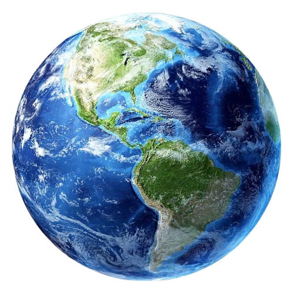

Anggota Tata Surya
Matahari
Sebagai pusat tata surya, Matahari adalah bintang besar yang memberi kita cahaya dan energi. Tanpa Matahari, tidak akan ada kehidupan di Bumi. Matahari juga mengendalikan semua planet di tata surya dengan gravitasinya yang kuat.
Merkurius
Merkurius merupakan planet yang terdekat dengan pusat tata surya yaitu Matahari dengan jarak 58.000.000 km. Planet ini sering disebut dengan bintang pagi karena kadang-kadang wujudnya terlihat menjelang Matahari terbit.
Diameter planet Merkurius sekitar 4.862, membuatnya menjadi planet terkecil. Periode rotasi Merkurius menghabiskan waktu selama 59 hari, sedangkan waktu untuk satu kali revolusi mengelilingi Matahari adalah 88 hari.
Diameter planet Merkurius sekitar 4.862, membuatnya menjadi planet terkecil. Periode rotasi Merkurius menghabiskan waktu selama 59 hari, sedangkan waktu untuk satu kali revolusi mengelilingi Matahari adalah 88 hari.

Venus
Planet kedua yang terletak dekat dengan tata surya adalah planet venus. Diameter planet venus mencapai 12.104 km, menjadikannya planet keenam terbesar dalam tata surya. Selain itu, Venus juga merupakan planet terpanas dalam tata surya dengan suhu mencapai 475 C.
Planet Venus membutuhkan waktu berotasi selama 243 hari, sedangkan untuk berevolusi mengelilingi Matahari butuh waktu setara dengan 225 hari.
Planet Venus membutuhkan waktu berotasi selama 243 hari, sedangkan untuk berevolusi mengelilingi Matahari butuh waktu setara dengan 225 hari.

Bumi
Bumi merupakan planet ketiga pada tata surya kita. Bumi tersusun dari batuan dan didominasi dengan perairan. Hal tersebut membuat bumi menjadi satu-satunya planet yang memungkinkan untuk ditinggali oleh makhluk hidup.
Bumi berotasi pada porosnya membutuhkan waktu selama 24 jam, sedangkan untuk berevolusi mengelilingi Matahari membutuhkan waktu selama 365 hari.
Bumi berotasi pada porosnya membutuhkan waktu selama 24 jam, sedangkan untuk berevolusi mengelilingi Matahari membutuhkan waktu selama 365 hari.
Mars
Mars merupakan planet keempat di tata surya. Mars juga dijuluki sebagai planet merah karena permukaannya yang berwarna kemerahan akibat adanya unsur besi yang teroksidasi hingga menimbulkan warna merah.
Mars memiliki atmosfer yang sangat tipis, dingin, berdebu, padang pasir atau gurun. Planet Mars juga memiliki banyak gunung besar dan lembah yang dalam. Selain itu, planet ini sering terjadi badai angin dibandingkan dengan planet lainnya.
Mars memiliki atmosfer yang sangat tipis, dingin, berdebu, padang pasir atau gurun. Planet Mars juga memiliki banyak gunung besar dan lembah yang dalam. Selain itu, planet ini sering terjadi badai angin dibandingkan dengan planet lainnya.
Jupiter
Jupiter adalah planet terbesar yang ada di tata surya, diameternya mencapai 139.820 km. Bahkan, ukurannya yang besar tersebut diumpamakan mampu memuat semua planet yang ada di tata surya.
Jupiter juga memiliki kerapatan yang relatif kecil, yaitu kurang dari kepadatan air serta berat jenisnya yang lebih kecil jika dibandingkan dari berat jenis air. Waktu yang dibutuhkan planet Jupiter untuk berotasi adalah selama 10 jam, sedangkan untuk berevolusi mengelilingi Matahari membutuhkan waktu selama 12 tahun.
Jupiter juga memiliki kerapatan yang relatif kecil, yaitu kurang dari kepadatan air serta berat jenisnya yang lebih kecil jika dibandingkan dari berat jenis air. Waktu yang dibutuhkan planet Jupiter untuk berotasi adalah selama 10 jam, sedangkan untuk berevolusi mengelilingi Matahari membutuhkan waktu selama 12 tahun.

Saturnus
Saturnus berjarak sekitar 1.425 juta km dari Matahari dengan periode rotasi 10 jam 2 menit, sedangkan untuk berevolusi membutuhkan waktu selama 29,5 tahun. Planet ini merupakan planet terbesar kedua dengan diameter 120.500 km dengan massa 2,68 x 1026 kg.
Planet ini dilengkapi dengan cincin raksasa yang terdiri dari es dan batuan-batuan yang besar. Planet ini memiliki 9 satelit yaitu Mimas, Enceladus, Dione, Rhea, Tethys, Hyperion, Titan, Lapetus dan Phoebe.
Planet ini dilengkapi dengan cincin raksasa yang terdiri dari es dan batuan-batuan yang besar. Planet ini memiliki 9 satelit yaitu Mimas, Enceladus, Dione, Rhea, Tethys, Hyperion, Titan, Lapetus dan Phoebe.

Uranus
Uranus merupakan planet ketujuh dalam tata surya. Planet ini merupakan planet terbesar ketiga pada sistem tata surya, dengan diameter 51.000 km atau sekitar empat kali diameter Bumi. Uranus juga merupakan planet yang terkenal sangat dingin dengan suhu mencapai -224 C.
Untuk memutari porosnya, Neptunus membutuhkan waktu selama 15,3 jam. Sedangkan untuk mengitari Matahari membutuhkan waktu selama 165 tahun.
Untuk memutari porosnya, Neptunus membutuhkan waktu selama 15,3 jam. Sedangkan untuk mengitari Matahari membutuhkan waktu selama 165 tahun.
Neptunus
Neptunus merupakan planet yang jaraknya paling jauh dari tata surya, yaitu sejauh 4.495 juta km. Karena letaknya yang amat jauh tersebut membuat planet ini tampak seperti senja yang redup bahkan ketika siang hari.
Satu hari di planet ini setara dengan 16 jam di planet bumi. Sedangkan untuk berevolusi mengelilingi Matahari membutuhkan waktu 165 jam.
Satu hari di planet ini setara dengan 16 jam di planet bumi. Sedangkan untuk berevolusi mengelilingi Matahari membutuhkan waktu 165 jam.